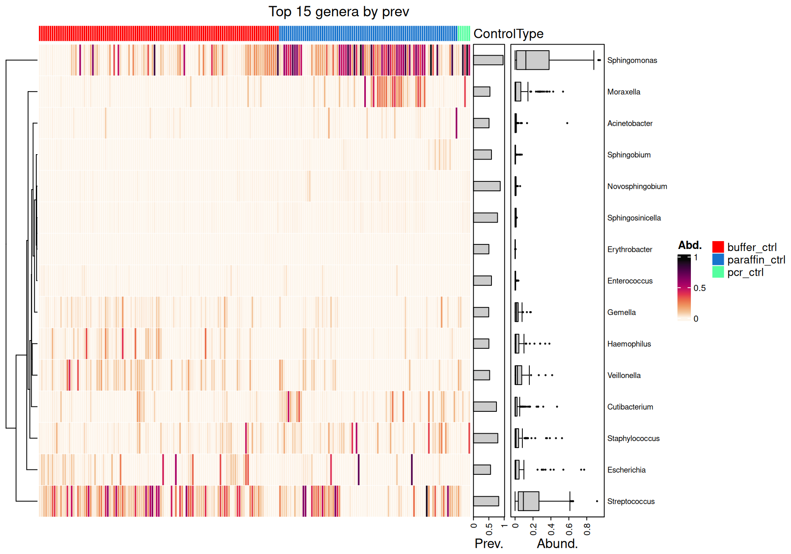
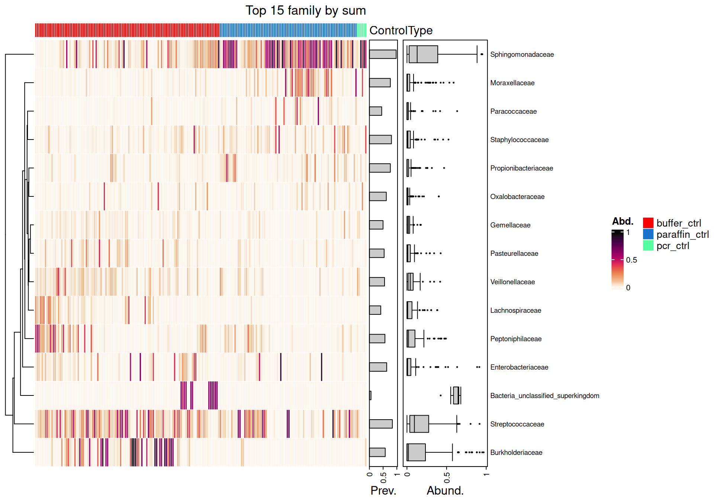
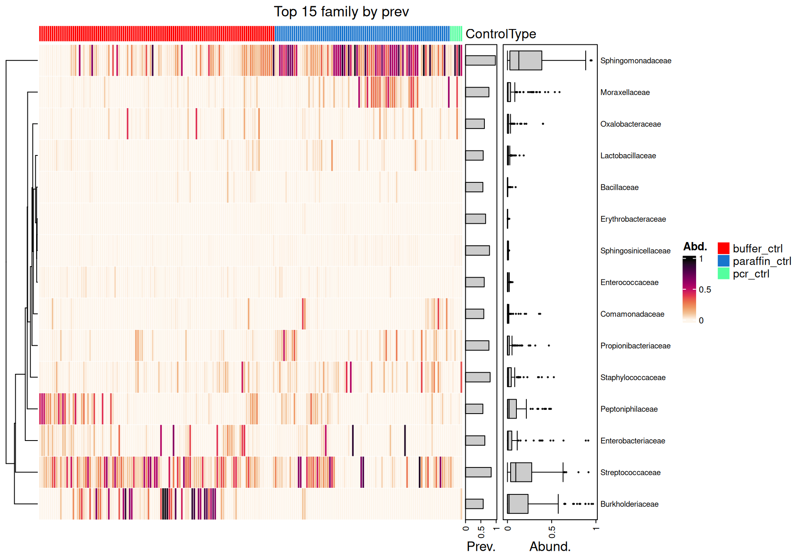
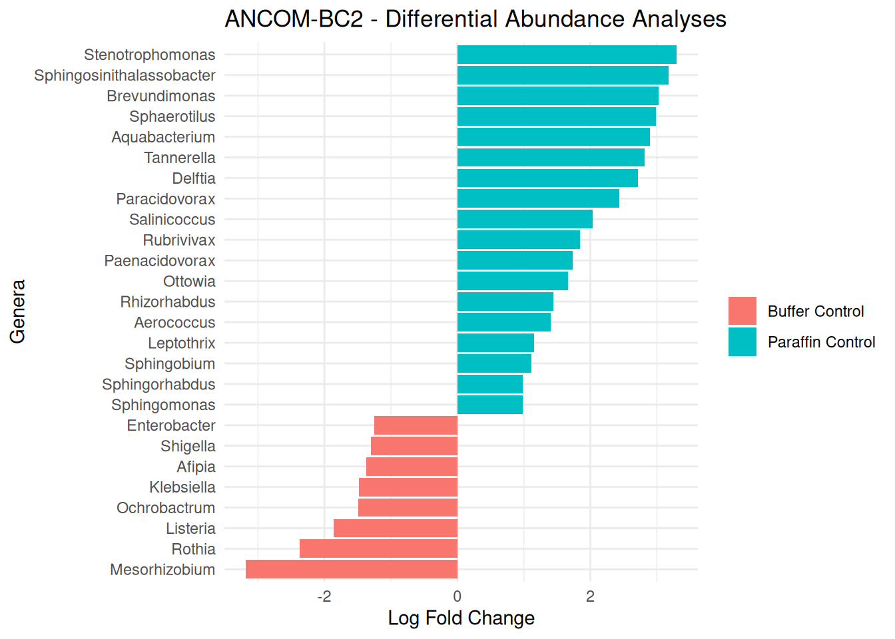

Figure S1.1 Alpha diversity of NCT samples by years: observed species richness, Shannon index, and inverse Simpson index (left to right respectively). Statistically significant pairwise differences are indicated.
Figure S1.2 Alpha diversity of NCT samples by seasons: observed species richness, Shannon index, and inverse Simpson index (left to right respectively). Statistically significant pairwise differences are indicated.
Figure S1.3 Alpha diversity of NCT samples by technicians: observed species richness, Shannon index, and inverse Simpson index (left to right respectively). Statistically significant pairwise differences are indicated.
Figure S1.4: Beta diversity ordination of NCT samples (Jaccard distance) using Wrench and rarefaction as normalization (left to right). Group centroids and PERMANOVA p-values are shown.
Figure S1.5: Beta diversity ordination of NCT samples (bray distance) using Wrench and rarefaction as normalization (left to right). Group centroids and PERMANOVA p-values are shown.
Figure S1.6: Beta diversity ordination of NCT samples (bray distance) using Wrench and rarefaction as normalization (left to right). Group centroids and PERMANOVA p-values are shown.
Heatmap
Code
plt <-HeatMap_MicroViz(ps = pseq, rnk ="genus", tax_trans ="compositional", tax_order_by = prev, n_taxa =15, my_title ="Top 15 genera by prev")
Code
## save to png#ggsave("./Figures_for_Manuscript_files/saved_png/1.4.png", plot = plt, width = 8, height = 6, dpi = 300)#png("./Figures_for_Manuscript_files/saved_png/1.4.png", width = 2400, height = 1800, res = 300)#plt # ht_list = your HeatmapList object#dev.off()plt

Figure S1.7: Heatmap of the top 15 most prevalence taxa in NCT samples at genus level.
Code
plt <-HeatMap_MicroViz(ps = pseq, rnk ="family", tax_trans ="compositional", tax_order_by = sum, n_taxa =15, my_title ="Top 15 family by sum")
Code
## save to png#ggsave("./Figures_for_Manuscript_files/saved_png/1.4.png", plot = plt, width = 8, height = 6, dpi = 300)#png("./Figures_for_Manuscript_files/saved_png/1.4.png", width = 2400, height = 1800, res = 300)#plt # ht_list = your HeatmapList object#dev.off()plt

Figure S1.8: Heatmap of the top 15 most abundance taxa in NCT samples at family level.
Code
plt <-HeatMap_MicroViz(ps = pseq, rnk ="family", tax_trans ="compositional", tax_order_by = prev, n_taxa =15, my_title ="Top 15 family by prev")
Code
## save to png#ggsave("./Figures_for_Manuscript_files/saved_png/1.4.png", plot = plt, width = 8, height = 6, dpi = 300)#png("./Figures_for_Manuscript_files/saved_png/1.4.png", width = 2400, height = 1800, res = 300)#plt # ht_list = your HeatmapList object#dev.off()plt

Figure S1.8: Heatmap of the top 15 most prev taxa in NCT samples at family level.
Figure S1.10: Stacked barplot of bacterial composition in negative control samples at phylum-family level, stratified by person.
DAA
Code
res <- rprojroot::find_rstudio_root_file() %>%file.path("Rscripts/Chap1/Quarto_Doc", "ancombc2_genus.rds") %>%readRDS()res_prim <- res$ressig_taxa_genus <- res_prim %>%mutate(Direction =if_else(lfc_sample_typeparaffin_ctrl >0, "Paraffin Control", "Buffer Control")) %>%filter(p_sample_typeparaffin_ctrl <=0.05) #%>% #arrange(desc(abs(lfc_sample_typeparaffin_ctrl))) %>% #slice_head(n = 20)#filter(diff_ConditionName == TRUE) %>% # Replace ConditionName with your actual group#arrange(desc(abs(lfc_ConditionName))) %>%#head(20)# Plottingplt <-ggplot(sig_taxa_genus, aes(x =reorder(taxon, lfc_sample_typeparaffin_ctrl), y = lfc_sample_typeparaffin_ctrl, fill = Direction)) +scale_fill_discrete("") +geom_bar(stat ="identity") +coord_flip() +labs(title ="ANCOM-BC2 - Differential Abundance Analyses",x ="Genera", y ="Log Fold Change") +theme_minimal()## save to png#ggsave("./Figures_for_Manuscript_files/saved_png/1.6.png", plot = plt, width = 8, height = 6, dpi = 300)plt

Figure 1.6: Differential abundance analyses via ANCOM-BC2 at genus rank between paraffin and buffer control types after acconting for technician batch correction.
Figure 2.3: Beta diversity cluster by environmental conditions (left), and technicians (right). Colors depict different technicians, while shapes depict different environmental conditions.
Code
## ANCOM-BC# Filter for significant resultsAncom_rds <- rprojroot::find_rstudio_root_file() %>%file.path("Rscripts/Chap2/Quarto_Doc", "ancombc2.rds") %>%readRDS()res_prim <- Ancom_rds$ressig_taxa <- res_prim %>%filter(p_EnvirHOOD <=0.1)#filter(diff_ConditionName == TRUE) %>% # Replace ConditionName with your actual group#arrange(desc(abs(lfc_ConditionName))) %>%#head(20)# Plottingplt_ancom <-ggplot(sig_taxa, aes(x =reorder(taxon, lfc_EnvirHOOD), y = lfc_EnvirHOOD, fill = lfc_EnvirHOOD >0)) +geom_bar(stat ="identity") +coord_flip() +scale_fill_manual(values =c("skyblue", "salmon"), labels =c("Bench", "Hood"), name ="Environment") +labs(title ="ANCOM-BC2",x ="Taxon", y ="Log Fold Change") +theme_minimal()######--------------------------------------------------------------------## ALDEX2require(ALDEx2)otu_count <- microbiome::abundances(pseq)metadata <- microbiome::meta(pseq)mm <-model.matrix(~ Environment + TA, data = metadata)# Step A: Generate Monte Carlo samples of the Dirichlet distribution# This accounts for the uncertainty of small sample sizesx <-aldex.clr(otu_count, mm, mc.samples =128, denom ="all", verbose =FALSE)# Step B: Run the GLM# This will test every taxon against the Condition AND Technicianglm_result <-aldex.glm(x, mm)
Nj Restrictive SCRuB Decontam
Nj NA "6.68e-05(****)" "5.44e-06(****)" "5.44e-06(****)"
Restrictive "1(ns)" NA "5.44e-06(****)" "5.44e-06(****)"
SCRuB "1(ns)" "1(ns)" NA "1(ns)"
Decontam "1(ns)" "1(ns)" "1.9e-05(****)" NA
Raw "1(ns)" "1(ns)" "1.9e-05(****)" "1(ns)"
Raw
Nj "5.44e-06(****)"
Restrictive "5.44e-06(****)"
SCRuB "1(ns)"
Decontam "5.44e-06(****)"
Raw NA
Nj Restrictive SCRuB Decontam Raw
Nj NA "0.001(**)" "0.003(**)" "0.001(**)" "0.001(**)"
Restrictive "1(ns)" NA "0.08(ns)" "0.003(**)" "0.001(**)"
SCRuB "1(ns)" "1(ns)" NA "0.001(**)" "0.001(**)"
Decontam "1(ns)" "1(ns)" "1(ns)" NA "0.001(**)"
Raw "1(ns)" "1(ns)" "1(ns)" "1(ns)" NA